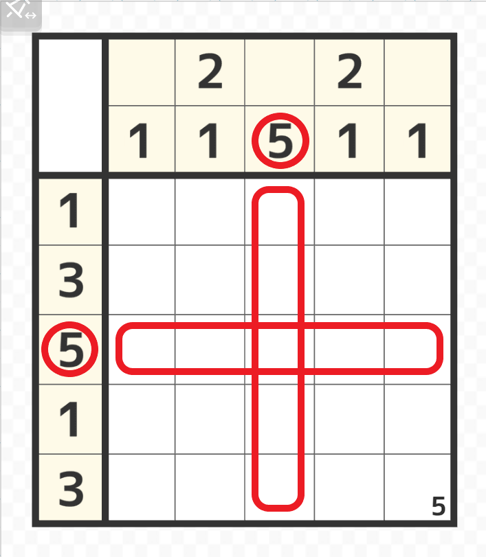
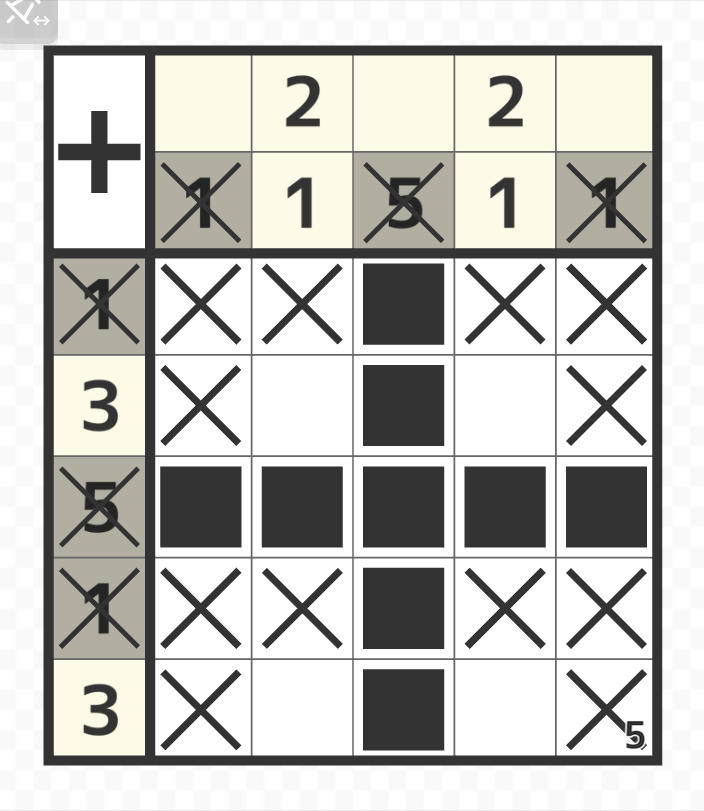
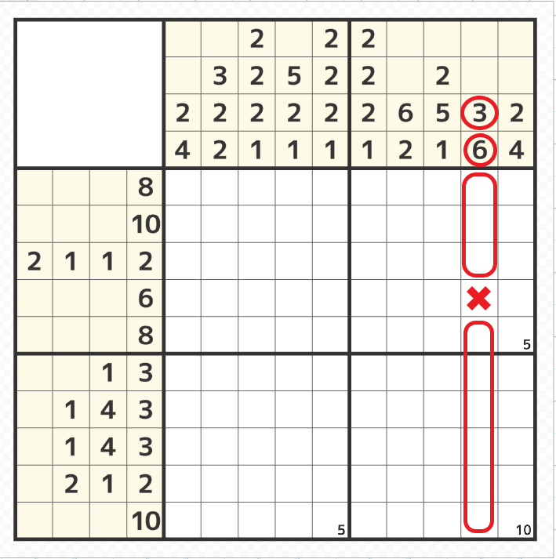
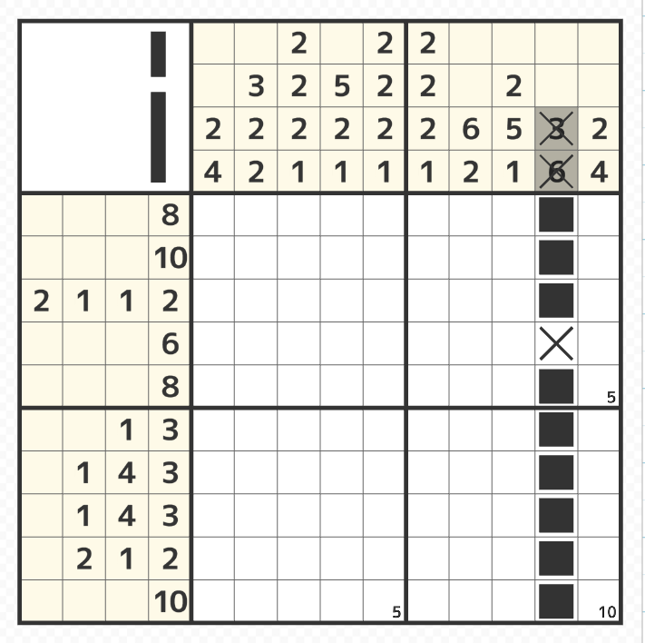
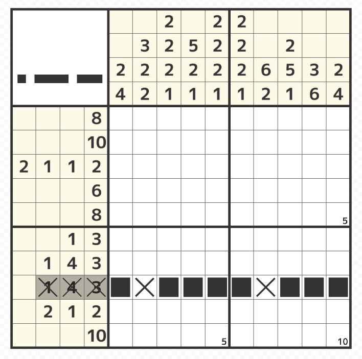

ヒント＆空白の合計 = マスの数

- 3行目と3列目のヒントの数字（赤丸）は「5」で、横も縦もマスの範囲の数は5マスのため赤線で囲まれた範囲は全て塗ることができる。

- 列や行毎に全てのヒントが塗られて空白が確定したところは自動で×が入る。

- また上図の9列目のように上から3マス塗って、下に最低1マス空白で、更に下に6マス塗ると 3 + 1 + 6 = 10 で縦の範囲10マスとイコールで塗る箇所が確定する。


- 上図の8行目のような場合は左から1マス（塗る）、1マス（最低1塗らない）、4マス（塗る）、1マス（最低1塗らない）、3マス（塗る）で合計10の為、塗る箇所が確定する。